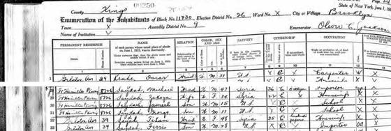
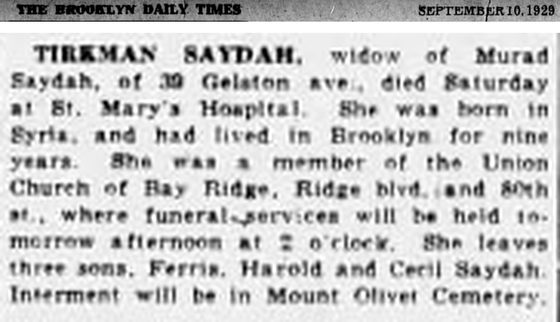
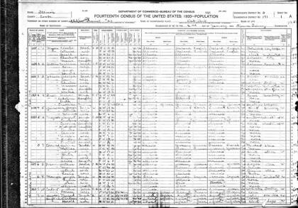
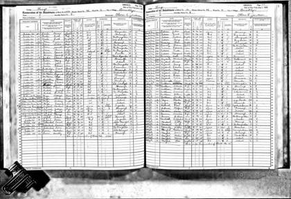

Murad’s widow. She gave to the Zahle Relief Committee in 1926 and was listed among the women sailing to the homeland in May 1927 (an Arabic paper; our translation, to be confirmed by a native reader).
- Born
- About 1878, Syria (age 51 in 1929; 42 in 1920; 48 in 1925) Probable
- Died
- 7 September 1929, aged 51, St. Mary’s Hospital, Brooklyn; buried at Mount Olivet Cemetery on 10 September; she lived at 39 Gelston Avenue Confirmed
- Funeral day
- The Arabic paper announced Tuesday 10 September 1929 (our translation, to be confirmed by a native reader); the Brooklyn Daily Times printed “to-morrow” on 10 September, so the day is an open conflict
- Spouse
- Murad Saydah Confirmed
- Children
- Fares (Ferris), Harold and Cecil, and a daughter, Nora, who died on 29 May 1920 Confirmed
- Listed among the women sailing, May 1927
- Arabic paper (our translation, to be confirmed by a native reader). Whether her sons went, and when she returned, is not known Probable
Spellings in the records: Tirkman, born Abu Ayn according to the Arabic papers (our translation, to be confirmed by a native reader); Tikam (1925 census); Tirkman Bouanain (Cecil’s Iowa delayed birth record); Saydah (death certificate). The certificate names her parents as Abdo Bouinain and Sylvia Bouman (as we read the hand), while the Arabic papers say Abu Ayn, an open conflict; Nora’s 1920 certificate gives the mother’s maiden name as Mary Boainam.
Read the full story All the people
Documents about Tirkman Saydah
 Document 72The Saydah brothers in a New York city directory
Document 72The Saydah brothers in a New York city directory
Document 1041925 New York State census: Michael Saydah and a second Saydah household Document 1551920 census, Oak Park, Illinois: Murad Saydah's household
Document 1551920 census, Oak Park, Illinois: Murad Saydah's household Document 157Tirkman Saydah's death certificate, 7 September 1929
Document 157Tirkman Saydah's death certificate, 7 September 1929
Document 158Brooklyn Daily Times obituary for Tirkman Saydah, 10 September 1929 Documents page1900 census, Deep River, Iowa: "William Sayydah" (Murad), Mary, Ferris and Harold (probably Antoon's brother)
Documents page1900 census, Deep River, Iowa: "William Sayydah" (Murad), Mary, Ferris and Harold (probably Antoon's brother) Documents page1905 Iowa state census, Deep River: the Sayyidah household (card list)
Documents page1905 Iowa state census, Deep River: the Sayyidah household (card list)
Documents page1920 census, Oak Park, sheet 1A: the household in detail (probably Antoon's brother)Documents pageSocial Security index lines for Murad and for Tirkman (probably Antoon's brother)
Documents page1925 census: Tirkman and Ferris at 39 Gelston Ave (Murad's wife)Documents pageMira'at al-Gharb, 3 May 1926, p.2: a donation list with Tirkman and Michael (Murad's wife)Documents pageMira'at al-Gharb, 6 May 1927, p.2: Tirkman sails for Syria (Murad's wife)Documents pageIndex to death certificates, 1929: Tirkman Saydah (Murad's wife)Each fact carries its label: Confirmed (shown in a record), Family (told to us) or Probable (fits but unproven). Living relatives are not listed.